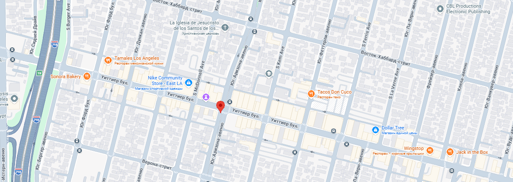

ИИ Запуск
Нексус
ИИ Запуск Нексус — это частная инициатива, созданная для ускорения ИИ-стартапов на ранних стадиях. Мы работаем с командами, которые хотят внедрять большие языковые модели, системный RAG, агентные архитектуры и ответственный ИИ. За 2025 год мы помогли 12 проектам запустить MVP. Мы не инвестируем деньгами — мы даём экспертизу, архитектуру и связываем с инфраструктурными партнёрами. Наша цель — помочь любому технически сильному основателю собрать готовый продакшн ИИ-решение.
ЛегалМайнд ИИ — юридический помощник для малого бизнеса
Команда из двух разработчиков пришла к нам с идеей сделать ИИ для анализа договоров. У них была модель, но она галлюцинировала, дорого стоила и не умела ссылаться на источники. Мы пересобрали архитектуру на потоке запросов с векторным поиском, добавили семантическое кэширование и прикрутили метки ответственности. Через 5 недель ЛегалМайнд ИИ обрабатывал 1500 страниц документов в день. Сейчас стартап тестируют три юридические фирмы. Фаундер говорит: «Без ИИ Запуска Нексуса мы бы еще полгода перебирали фреймворки».
Команда разработки

основатель, бывший Архитектор ИИ
Дженсен Хуанг
руководитель отдела продукции
Александр Ван
руководитель MLOps
Сэм Альтман